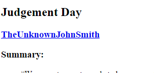
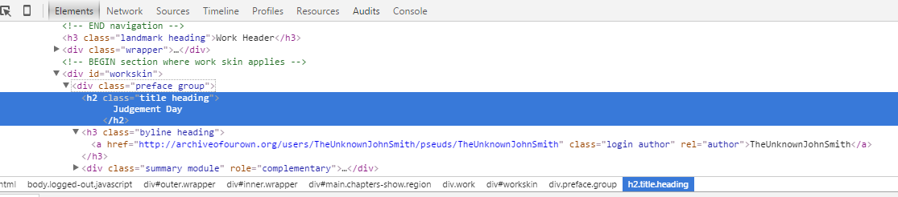

If you're like me, you will have discovered that there are many sites on the Internet that have fiction that is free to read. For example, http://archiveofourown.org. Unfortunately, most of these sites have two minor drawbacks. Firstly, because they're online sites, you need to be on-line to view them. Second, the individual chapters of each story (and the good stories almost always have multiple chapters) are on multiple web pages. So you need to go between the web pages to read the story.
Consequently, when after reading the first chapter of one of these stories, I've often wished that I could press a single button on my browser and have the whole story saved to an EPUB file in my downloads directory, ready to copy to my EPUB viewer.
Well, it turns out that it's possible to write "extensions" for Google's Chrome browser, which allow you to add additional functionality to Chrome. So, I've used that to to create a "Save to EPUB" plug-in, and I'm now going to show you how it's done, so you can use it, and extend it to handle the sites you like.
The topics covered are:
For those of you who just want to use the code, the basic steps are:
Google's excellent documentation on building extensions can be found at http://developer.chrome.com/extensions/getstarted.htm.
However, here's the key points.
The manifest for the Web To EPUB extension looks like this:
{
"manifest_version": 2,
"name": "WebToEpub",
"version": "1",
"icons": { "128": "book128.png" },
"permissions": ["tabs", "<all_urls>" ],
"browser_action": {
"default_title": "",
"default_icon": "book128.png",
"default_popup": "popup.html"
},
"minimum_chrome_version": "46"
}
The major points of note are:
Popup.html is this:
<html lang="en">
<head>
<meta charset="utf-8">
<title>WebToEpub</title>
<base />
</head>
<body>
<style>
body {
}
.scrollingtable {
overflow: scroll;
height: 300px;
}
</style>
<section id="inputSection">
<table id="inputTable">
<tr>
<td>Starting URL</td>
<td><input id="startingUrlInput" type="url" name="startingUrlInput" size="80" /></td>
</tr>
<tr>
<td>Title</td>
<td><input id="titleInput" type="text" name="titleInput" size="80" /></td>
</tr>
<tr>
<td>Author</td>
<td><input id="authorInput" type="text" name="authorInput" size="80" /></td>
</tr>
<tr>
<td>Language</td>
<td><input id="languageInput" type="text" name="languageInput" size="80" /></td>
</tr>
</table>
<button id=fetchChaptersButton>Fetch Chapters</button>
<button id=packEpubButton>Pack EPUB</button>
</section>
<section id="testSection"></section>
<section id="outputSection">
<div class="scrollingtable">
<table id=chapterUrlsTable>
<tr>
<th align=left>Title</th>
<th align=left>Loaded?</th>
<th align=left>URL</th>
</tr>
</table>
</div>
</section>
<!-- scripts go here -->
<script src="js/EpubMetaInfo.js"></script>
<script src="js/Util.js"></script>
<script src="js/HttpClient.js"></script>
<script src="js/parsers/ArchiveOfOurOwnParser.js"></script>
<script src="js-lib/jszip.min.js"></script>
<script src="js/EpubPacker.js"></script>
<script src="js/testFunctions.js"></script>
<script src="js/main.js"></script>
</body>
</html>
As you can see, it's an ordinary HTML file, with fields to show the key attributes of the story: Title, Author, Language and Chapters. The only, even slightly, unusual aspect is that it has no embedded JavaScript.
When this Extension is activated, the first thing it does is find the currently active tab (web page) in Chrome and search it for story information. Basic steps are:
The contents of the Content Script looks like this:
// pack the DOM of this page into a message
var parseResults = {
messageType: "ParseResults",
document: document.all[0].outerHTML,
};
// send message back to our extension
chrome.runtime.sendMessage(parseResults);
And the onload() function in popup.html looks like this:
// actions to do when window opens
window.onload = function () {
// register listener that is called when content script injected into HTML sends its results
chrome.runtime.onMessage.addListener(function (request, sender, sendResponse) {
if (request.messageType == "ParseResults") {
// convert the string returned from content script back into a DOM
let dom = new DOMParser().parseFromString(message.document, "text/html");
// pass the DOM onto our function to extract the story info (more on this later)
processHtmlFromTab(dom);
}
});
// inject the content script into the active tab.
// in this case, the content script is in a file called "ContentScript.js"
chrome.tabs.executeScript({file: "js/ContentScript.js"});
}
And that's all you need to do for an extension to read the current tab's contents in Chrome. For more details on what's going on, check out Google's documentation on Content Scripts and Sending Messages.
This section assumes you know what a DOM is. If you don't, I suggest you read Chapter 13 of Eloquent Javascript. Go ahead, I'll wait.
Welcome back. Now that you know what a DOM is and we got the DOM for the web page in the previous section, the next step is to extract the information we need from the DOM. The things that we want are:
The first step to extracting the information is to figure out how to find it in the DOM. Fortunately, Chrome has the tools built in to make doing this easy. All you need to do is:
I'll walk you through an example. Start by loading the page http://archiveofourown.org/works/685590/chapters/1258295 and scroll through it until you see the story's Title and Author. It will look something like this.
Right click on "Judgement Day" and select "Inspect Element". The Elements window appears at the bottom of the screen, looking something like this
Note the element that is highlighted, this is the element holding the title.
<h2 class="title heading">
Judgement Day
</h2>
This shows us that the Title is in a <h2> tag, with a class of "title heading". If we now click on the Author's name on the web page, the following DOM element is highlighted.
<a href="http://archiveofourown.org/users/TheUnknownJohnSmith/pseuds/TheUnknownJohnSmith" class="login author" rel="author">TheUnknownJohnSmith</a>
So the author is in an "a" tag, with a class of "login author".
Finally, right click on drop down box that shows the list of chapters. The section of DOM looks like
<select id="selected_id" name="selected_id"><option value="1258295" selected="selected">1. Chapter 1</option>
<option value="1258298">2. Judgement Day Part II</option>
<option value="1457060">3. The Chariot</option>
<option value="1457063">4. The World</option>
<option value="1663608">5. Judgment</option>
<option value="2342893">6. Temperance</option></select>
As you can see, each chapter is in an "option" tag, with a "value" attribute that is URL of the chapter (relative to the web page).
Finding the language of the story is a bit more difficult, as it's not explicitly shown on the web page. However, if we look at the source of the web page, which Chrome will show if we right click on the page and select "View page source", we find the following
<meta name="keywords" content="fanfiction, transformative works, otw, fair use, archive">
<meta name="language" content="en-US">
<meta name="subject" content="fandom">
So the language is the "content" attribute of "meta" tag, with a "name" attribute "language".
Now that we know where the information we want is in the DOM, the next step is to extract it. Let's start with the title. As previously mentioned, the title is in a <h2> tag, with a class of "title heading". So, given the DOM object returned by the ContentScript, the following function will extract the title.
extractTitle: function(dom) {
// first, get a list of all "h2" elements in the document
let elements = dom.getElementsByTagName("h2");
// getElementsByTagName() returns a HTMLCollection, convert it into an array
elements = Array.prototype.slice.apply(elements);
// remove all elements that do not have a class name of "title heading"
elements = elements.filter(e => e.className === "title heading");
// if the list has an element, then we've found the element we're looking for, so return its innerText.
return (elements.length != 0) ? elements[0].innerText() : null;
}
The two interesting parts are the functions getElementsByTagName() and filter().
getElementsByTagName() does just what it's name suggests, it returns all elements in the DOM with the specified tag. Actually, it's more powerful that that. As well as searching an entire DOM, if you give it an element of the DOM, it will search the child nodes of that element. This can be useful if you wanted to find a specific child node of a section of the DOM.
The .filter() function removes the <h2> elements that don't have a className of "title heading". The essentials of filter() are it takes an array of objects and a function that returns true or false. (The technical term for this is a predicate.) Given these two inputs, filter() builds and a new array that containing all elements that the predicate returns true for. In the above function, e => e.className === "title heading" is the predicate, I've written it as an arrow function expression that newer versions of Chrome support (it's part of the ECMAScript 6 standard.) This is just a shorthand way of saying: function(e) { return e.className === "title heading"; }. Congratulations! You've just had your first introduction to functional programming.
Now that we've seen how to get the Title, it should be obvious that getting the author is an almost identical process. The only difference is we look for an <a> element, with a class of "login author".
Finding the Language is also easy.
Finding an extracting the chapter information is only a tiny bit more complicated. The new wrinkles are
Having to return title and URL for a chapter is easy. Once we have an <option> element, the title is the innerText, and the URL is the "value" attribute. We already know how to extract both of these. So, all we need is a function to extract and package them together.
optionToChapterInfo: function(optionElement) {
return {
sourceUrl: optionElement.getAttribute("value"),
title: optionElement.innerText
};
}
Handling multiple chapters is also easy. If you look at the extractTitle() function we wrote previously, you'll see that it's handling multiple elements (at least until the last line where it takes just the first element.) So, we can use that code to get an array of <option> elements. After that, it's just a matter of converting the <option> elements array into an array of "chapterInfo" objects. And this is really easy. The following code will do it.
return elements.map(optionToChapterInfo);
What the map() function does: if you have a function that converts one type of object into a new type (which we do, it's optionToChapterInfo we wrote previously) and an array of objects you want converted, it will create an array of the new types from the old ones. Functional Programming is awesome.
Now that we have a list of URLs for the chapters, the next step is to fetch the them. This can be done using XMLHttpRequest. If you followed the above link, then the only additional thing you need to know is that Chrome requires a "<all_urls>" permission in the extension's manifest. For those that didn't follow the link, the basics are:
The big complication XMLHttpObject, in case you didn't get it, is that the response is asynchronous1 and we have multiple pages to fetch. This requires asynchronous, recursive logic in the onload() handler which checks which chapter has been received, then calls the XMLHttpObject, setting the onload() handler to itself when the result arrives. I'm not going to try explaining it in more detail here because it makes my head hurt. If you want to see how it's done, examine onFetchChapters() and onLoadChapter() in main.js of this project.
Note 1You can use XMLHttpRequest synchronously under some conditions, but it's not a good idea. Read the XMLHttpRequest docs for details.
At this point, you have the web pages making up the story and the story's metadata (Title, Author, source URL and language). This is everything you need to create an EPUB for the story. The full EPUB specifications (currently version 3.0.1) are available on the web. If you find those documents lengthy, Wikipedia has an excellent summary. Or, you could read my earlier article on building an EPUB reader. If that's still too lengthy, here's the thumbnail "An EPUB is a zip containing web pages and some files that describe how to view the web pages."
Therefore, if we're going to create an EPUB, the first thing we're going to need is a way to make a zip file in JavaScript. I use the jszip library for this, it's very easy to use. There's just three steps needed.
Jumping back to the "some files that describe how to view the web pages", there are 4 files we need.
Adding a mimetype file to the zip is trivial, as it's just a string, the following code will do the job.
zipFile.file("mimetype", "application/epub+zip");
Adding the container.xml file is almost as easy. Because we will always use the same name for our OPF file, container.xml is also just a constant string. So, code to add container.xml is identical to that for mimetype, except we replace "mimetype" with "META-INF/container.xml" and "application/epub+zip" with the XML for container.xml.
Adding the OPF file is not much more difficult, even thought we need to build it using the information about the story before we can add it to the zip file. That said, the OPF file is XML and has a simple structure. My earlier article on parsing an EPUB file describes the OPF structure, so I won't repeat it here. Assembling the XML to build such a structure is easy. You could do it by inserting text into strings, if you wanted. I would advise against doing it that way, it fails when the text you're inserting contains characters that need to be escaped. Using a DOM and add elements to it is just as easy, much safer, and easier to understand. To see how it's done, look at the function buildContentOpf() in EpubPacker.js.
Once we have the OPF file, we want to add it to the file as a compressed file. This is trivial:
zipFile.file("content.opf", buildContentOpf(), { compression: "DEFLATE" });
Like the OPF, the "Table of Contents" (ToC) is a simple XML file that needs to built before it can be saved. There's nothing new to creating the ToC that you didn't see for the OPF, look at buildTableOfContents() in EpubPacker.js if you want to see the details.
Next step is to add the web pages to the zip. There is a minor complication. The EPUB 2 specification requires these web pages to be XHTML, also known as HTML 4. But web pages fetched from the Internet are usually HTML. I solve this problem by stripping the actual story content from the fetched web page, inserting it into a blank XHTML document, which is added to the zip file. As a beneficial side effect, this process usually strips out JavaScript and CCS file links as well. So you don't need to fetch these files and pack them into the EPUB.
Once all the files have been added to the zip, the final step is to generate a blob and save the blob to your browser's "Downloads" folder. Ideally, we'd just call saveAs() to do this, but Chrome no longer supports it. So, we can either use a polyfill library, or use code like this
saveAs: function (blob, fileName) {
var a = document.createElement('a');
a.href = URL.createObjectURL(blob);
a.download = fileName;
a.click();
}
This is the third JavaScript program I've attempted to write. One of the things I quickly learned was that providing unit tests to exercise the code as it was being written was vital. The only way to know if your JavaScript works (or is even syntactically valid) is to run it. Having working unit tests means that I could verify that the code I'd just written by (re)loading the web page Tests.html in unitTest folder. i.e. Clicking refresh in Chrome. I didn't need to manually drive the extension's UI. Which got very tedious after the 200th time.
If you've gotten this far, I'm going to assume you want to modify this extension to save files from a site you like. So I'll give you some tips.